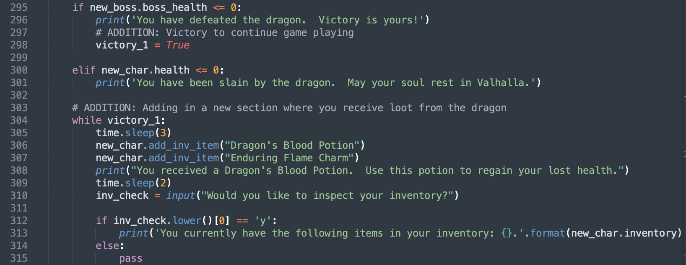
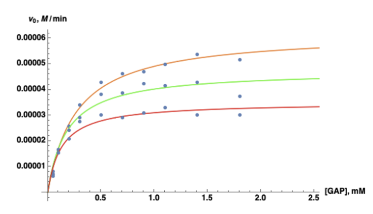
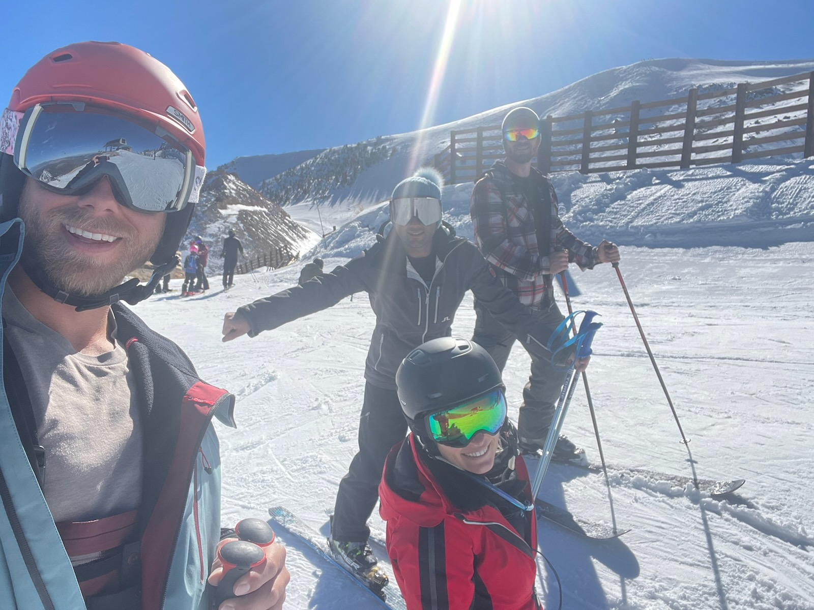
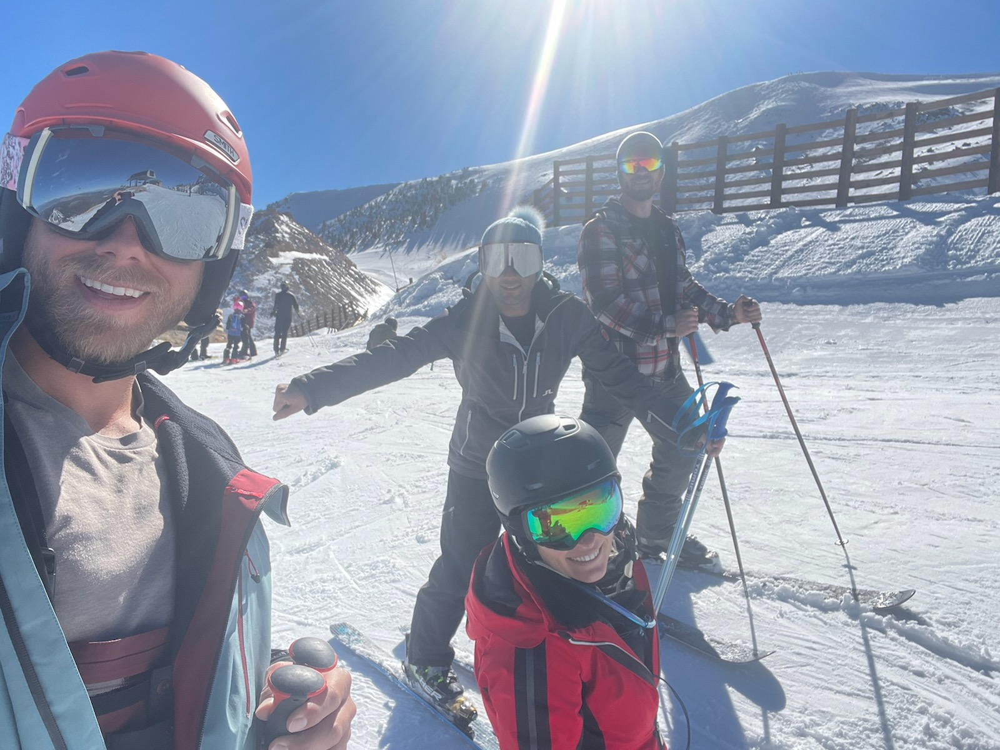

My Skills
Coding and Programming

I am an exceptional Python programmer and am currently working to expand my knowledge to other languages such as HTML, CSS, and JavaScript (hence the website). Above is a short excerpt of code from a small text-based adventure game I created with Python that I call "Dragon's Lair". Want to play it yourself? The file is available here.
Data Analysis

Throughout the UCSB Biochemistry program I developed the skills necessary to provide thorough data analysis. Those familiar with the biological sciences will recognize the beautiful Michaelis-Menten plot shown above, which was generated during an experiment to determine both the mechanism of action and mechanism of inhibition of the enzyme glyceraldehyde-3-phosphate dehydrogenase, a key enzyme involved in the glycolytic pathway (which is responsible for turning blood sugar--glucose--into a usable form of energy). The full write up for this experiment can be found on my LinkedIn, here. Following my graduation from UCSB, I have further expanded upon this skillset through the use of Python programming and associated data science libraries such as pandas, NumPy, Matplotlib, and Seaborn.
Information Communication
Knowing how to read and interpret data is only half the battle. To truly be effective, one must be able to clearly and concisely communicate their findings and, more importantly, what those findings mean. When writing reports, I focus on three basic questions: What? So what? Now what? By answering just these three questions, one should be able to interpret the data and use it to drive future business or scientific endeavors.
Hobbies
It only makes sense to include some of my hobbies on my personal website to not only show what I enjoy doing in my free time, but also to prove that I'm not some robot of a human who sits behind a desk for 14 hours a day (thankfully that point in my life has passed). I'm big on spending time outdoors and enjoying nature. I also enjoy anything fast-paced and exhilarating, such as motorcycle riding and skiing. Oh, and I'm also a big foodie. If you're looking for someone who will always answer "Yes" when you ask, "Are you hungry?", then I'm your guy.
 
